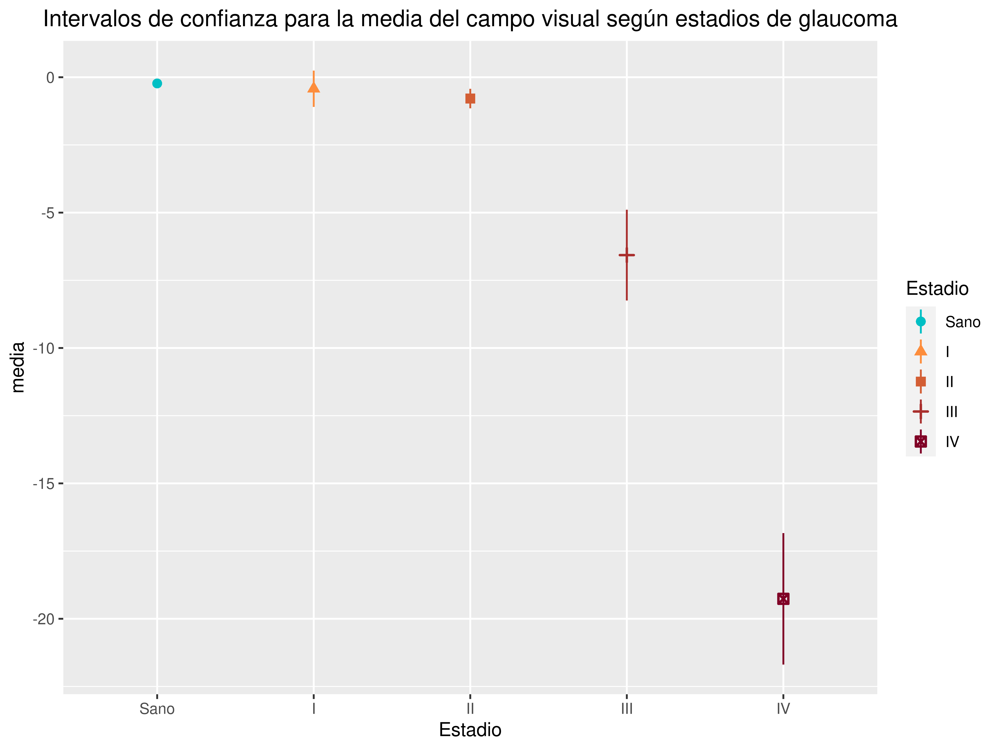

Análisis de concordancia entre las clasificaciones del glaucoma según los anillos retinianos y según el campo visual
2021-04-08
Objetivo
Este estudio pretende comprobar si existe concordancia entre la clasificación de los ojos en los estadíos de glaucoma definidos a partir de los anillos retinianos (ver http://aprendeconalf.es/glaucoma/glaucoma-clusters-izdo.html) y la clasifiación clásica a partir de campo visual.
Análisis del campo visual
Diagrama de cajas del campo vistual según estadíos de glaucoma

Intervalos de confianza para la media del campo visual según estadíos de glaucoma
| Estadio | n | media | desv.est | error.est | lim.inf.ic | lim.sup.ic |
|---|---|---|---|---|---|---|
| Sano | 500 | -0.2292 | 1.141 | 0.0510 | -0.3295 | -0.1289 |
| I | 34 | -1.1956 | 2.388 | 0.4096 | -2.0289 | -0.3622 |
| II | 39 | -1.4051 | 2.478 | 0.3968 | -2.2084 | -0.6018 |
| III | 33 | -7.4409 | 7.116 | 1.2388 | -9.9642 | -4.9176 |
| IV | 26 | -19.0023 | 9.091 | 1.7829 | -22.6742 | -15.3304 |
 Como se puede apreciar, existe una separación clara entre los intervalos de confianza para la media del campo visual de los estadíos de glaucoma excepto para los estadíos I y II que se solapan.
Definición de estadíos a partir del campo visual
Definimos a partir del campo visual 4 estadíos al igual que se hizo con los anillos retinianos.
| Estadio.CV | n | media | desv.est | error.est | lim.inf.ic | lim.sup.ic |
|---|---|---|---|---|---|---|
| I | 90 | -1.367 | 1.990 | 0.2097 | -1.784 | -0.9504 |
| II | 28 | -10.192 | 3.813 | 0.7206 | -11.671 | -8.7135 |
| III | 19 | -26.974 | 3.208 | 0.7359 | -28.520 | -25.4276 |
| IV | 1 | -91.000 | NA | NA | NaN | NaN |
Análisis de concordancia
Calculamos el coeficiente de concordancia de Kendall para comprobar si los estadíos definidos a partir de los anillos retinianos concuerdan con los definidos a partir del campo visual. No se consideran los ojos sanos ya que la concordancia en este grupo es perfecta.
Kendall's coefficient of concordance Wt
Subjects = 138
Raters = 2
Wt = 0.854
Chisq(137) = 234
p-value = 4.88e-07 Se puede concluir que existe una concordancia fuerte (\(W=0.831\)) y muy significativa (\(p<0.01\)) entre ambos rankings de clasficación del glaucoma.